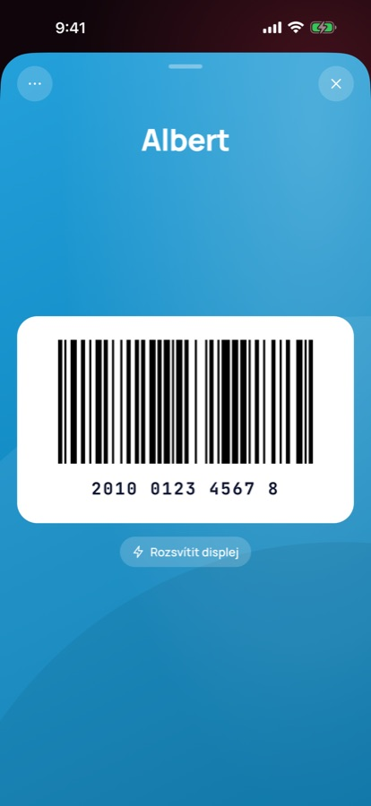

Přijdeš do obchodu. Karta se otevře sama.
Všechny věrnostní karty v iPhonu. Cardo pozná, kde jsi, a rovnou ti ukáže detail správné karty. Žádné hledání u pokladny, žádné Face ID, žádné reklamy.
Stáhnout zdarma v App Storu
Co Cardo umí
- V obchodě automaticky otevře detail karty
- Karty přidáš vyfocením, opsáním čísla nebo hromadně ze screenshotů — třeba z Klarny, i s názvy obchodů
- Widget na ploše a sdílení karet s rodinou
- Funguje bez internetu, data zůstávají v telefonu, automatické zálohy